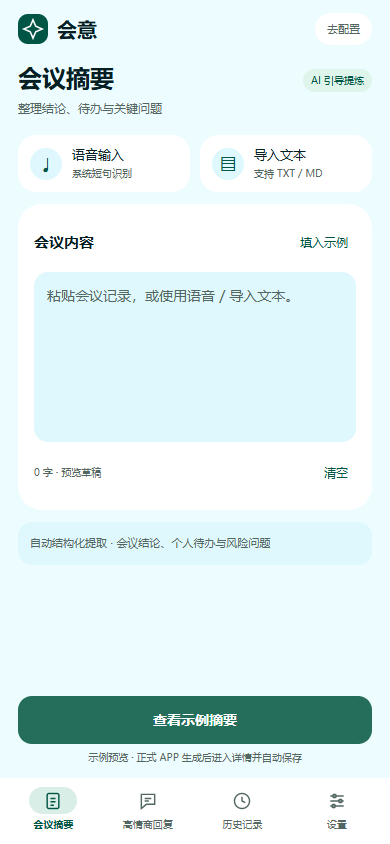
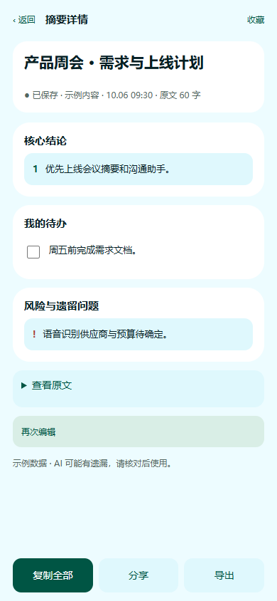
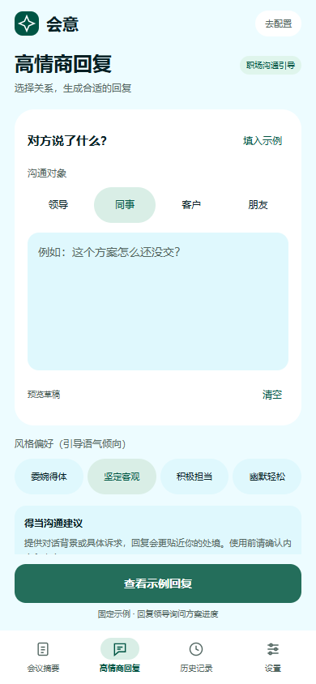
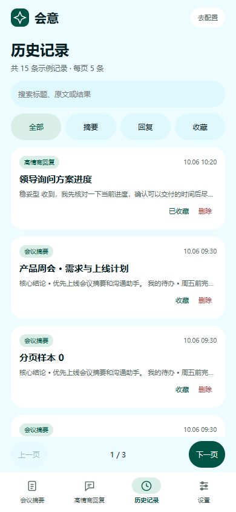
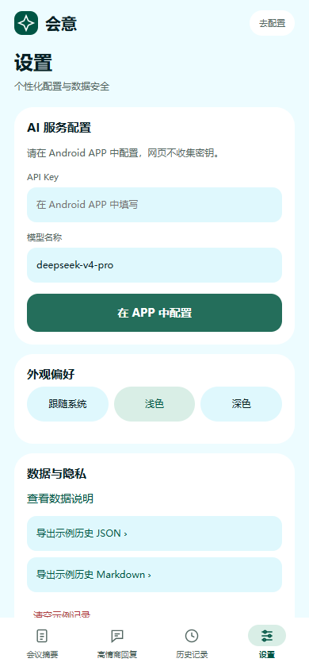

会议结束，重点留下。
粘贴会议记录，或导入 TXT / Markdown。
让冗长讨论变成清晰的结论、待办和风险事项。
核心结论
确认上线范围与优先级
我的待办
周五前完成需求文档
风险问题
供应商与预算待确认
会议纪要与沟通助手
讨论很多，会意帮你理清。
从会议结论、个人待办，到一条得体的回复，
让每次沟通都能落到实处。
v1.3 测试版 · Android 7.0 及以上 · 8.37 MB


界面示意 · 使用示例内容
把共识留清楚
把待办理出来
把表达说得体
BUILT FOR YOUR WORKDAY
少花时间整理信息，多一点余裕推进工作。
会意把常用的四件事，放进一个 APP。
粘贴会议记录，或导入 TXT / Markdown。
让冗长讨论变成清晰的结论、待办和风险事项。
确认上线范围与优先级
周五前完成需求文档
供应商与预算待确认
根据关系与语气偏好，找到适合当前场景的表达。
结果自动保存到本机。搜索、筛选、收藏，也可以回到原文再次编辑。
连接自己的 DeepSeek 服务，选择喜欢的外观。
草稿、纪要和待办状态保留在当前手机。
A CLOSER LOOK
输入页保持简短，结果独立查看。
用手机整理工作，也可以轻松一点。



以上为界面示意，使用示例内容。
READY IN THREE STEPS
在 Android 手机上打开安装包，按系统提示完成安装。
在设置中填写自己的 DeepSeek API Key 和可用模型，保存配置。
粘贴会议文字或选择沟通关系，生成后核对、收藏或导出。
系统语音输入适合短句和要点；长会议请先取得转写文本再导入。
官网上线后，可使用手机扫码下载。
仅支持 Android · 首次使用需配置 API Key